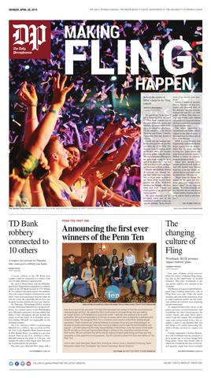
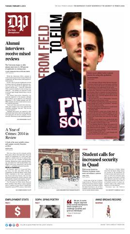
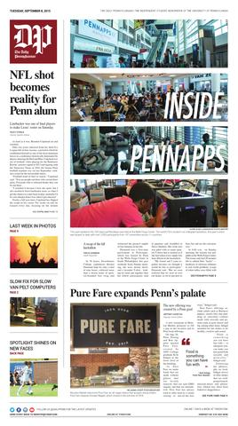
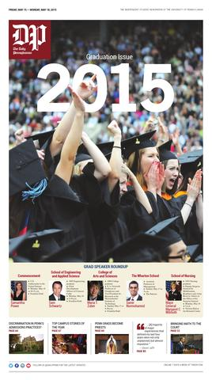
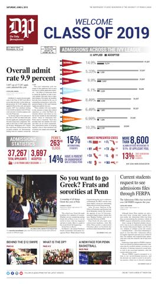

The Best Way to Reach Penn
We are The Daily Pennsylvanian, the newspaper by and for the students of the University of Pennsylvania. When our readers open “the DP” every morning, they open a world of campus and city news, feature stories, sports, commentary, advertising, and much more. Whether in our daily newspaper, our weekly magazine, our special issues, or our websites, The Daily Pennsylvanian is the fi rst read for the Penn community.
In an era when we often hear about the struggles of mass-market commercial newspapers and about students only getting their information online, The Daily Pennsylvanian thrives as a community newspaper because we remain relevant to our audience of devoted readers. And for our advertisers, that’s why we are a proven and eff ective way — and still the best way — to reach Penn. We off er multiple media in print, online and out-of-home that reach diff erent segments of the Penn market, from students to faculty/staff to parents and alumni, allowing you to choose the medium or media mix that best suits your advertising needs.
The Penn Market
| Students |
Male |
Female |
| Undergraduate |
5,592 |
5,956 |
| Graduate |
6,147 |
7,111 |
| Total |
11,739 |
13,067 |
Total Students: 24,806
| Employees |
|
| Faculty |
6,882 |
| Administration |
10,446 |
| Total |
11,739 |
Total Employees: 17,328
Total Penn Community: 42,134
Readership
23,144
Penn students, faculty, and staff read The Daily Pennsylvanian weekly. 7,000 copies of the newspaper are distributed daily- The Daily Pennsylvanian is published Monday through Thursday mornings when Penn classes are in session, 116 days each year.
- Distributed free at
80+
campus-area high-traffi c locations such as dorms, dining halls, libraries, classrooms, and administrative buildings.
About DP Readers
Spring 2014 and 2015 market research studies of college students nationally, and of Penn students and faculty/staff locally, show:
- 76% of Penn undergraduates, and more than 50% of Penn community members, read the newspaper at least once a week.
- The University of Pennsylvania is Philadelphia’s largest non-government employer — and more than 7,000 members of Penn’s faculty and staff read the newspaper each week.
- DP readers travel to Center City more than 100,000 times per month.
- Every year, DP readers spend $22 million on clothing, $8 million on computers and software-related products, $775,000 on salon services, and $4.5 million on furniture.
- Student DP readers’ monthly discretionary spending is $250 — 27% more than the national college student average of $197.
- Nearly 17,000 Penn students live in a house or apartment off-campus.
- n DP readers spend $82 million each year eating out; they dine out at sit-down restaurants more than 92,000 times per week.
- More than 52% of DP readers have access to cars for easy travel to all areas of Philadelphia, the suburbs, and beyond.




